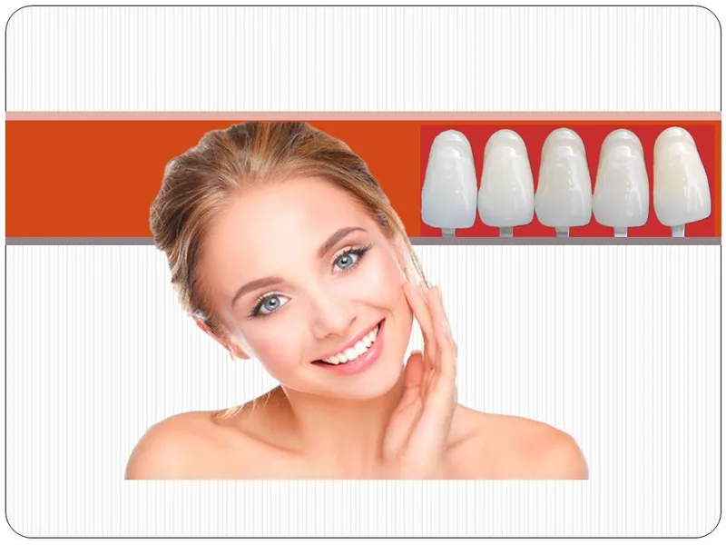

Licówki E-max: zalety i wadyCieńsze i mocniejszeWybór licówek stomatologicznych rośnie wraz z zapotrzebowaniem. Technologia stomatologii estetycznej rozwija innowacyjne produkty w oparciu o preferencje pacjentów. Osoby, które pragną idealnego projektu uśmiechu, oczekują też, że zabiegi wykonane na ich zębach będą zarówno dopasowane indywidualnie, jak i trwałe przez długi czas.
Dzięki najnowszym możliwościom technologicznym licówki stały się znacznie cieńsze. Dlatego zakładanie licówek wymaga mniejszego szlifowania zębów. Jeśli chcesz wykorzystać tę technologię i zyskać piękniejszy uśmiech dzięki licówkom Emax, poniżej znajdziesz wszystko, co chcesz wiedzieć o ich zaletach i wadach.
Czym są licówki Emax?
Licówki Emax to bezmetalowe, bardzo cienkie licówki ceramiczne zakładane na przednią powierzchnię zębów, które pozwalają uzyskać piękny uśmiech, eliminując drobne problemy strukturalne i niedoskonałości estetyczne.
Z czego wykonane są licówki E-max?
Licówki Emax to ultracienkie, wykonywane na indywidualne zamówienie, trwałe licówki stomatologiczne wytwarzane z rodzaju ceramiki szklanej zawierającej lit i krzemian, znanej również jako dwukrzemian litu.
Czym licówki Emax różnią się od innych licówek?
Największa różnica między licówkami Emax a innymi rodzajami licówek (porcelanowymi, kompozytowymi i Lumineers) polega na tym, że licówki Emax są cieńsze, wytrzymalsze i wymagają mniejszego szlifowania zębów. Dodatkowe zalety opisujemy w kolejnych akapitach.
W jakich przypadkach można wybrać licówki Emax?

- Złamane lub pęknięte zęby
- Szpary między zębami i problemy z ustawieniem zębów
- Zaburzenia kształtu i formy zębów
- Przebarwienia zębów
- Problemy z estetyką zębów
Jeśli dotyczy Cię którykolwiek z poniższych problemów, możesz się go pozbyć dzięki licówkom Emax.
Złamane lub pęknięte zęby
Licówki Emax mogą posłużyć do odbudowy złamanych, pękniętych lub startych zębów. W ten sposób pozbywasz się problemów z zębami i zyskujesz estetyczny wygląd uzębienia.
Szpary między zębami i problemy z ustawieniem zębów:
Licówki Emax mogą pomóc zarówno przy szparach, jak i przy krzywo ustawionych zębach. Dzięki licówkom Emax pozbędziesz się tych problemów i zyskasz idealny uśmiech.
Zaburzenia kształtu i formy zębów:
Jeśli masz krzywo ustawione zęby, zęby o różnej wielkości lub inne deformacje, możesz zdecydować się na licówki Emax, aby skorygować kształt zębów. W ten sposób rozwiążesz problemy związane z estetyką uzębienia.
Przebarwienia zębów:
Jeśli Twoje zęby są przebarwione i mają plamy albo jeśli wybielanie nie sprawiło, że są wystarczająco białe, licówki Emax będą dla Ciebie dobrym wyborem.
Problemy z estetyką zębów:
Możesz szczególnie chcieć, aby Twoje przednie zęby wyglądały bardziej estetycznie. W takim przypadku najlepszą opcją są licówki Emax.
Jakie są zalety licówek E-max?
Zalety licówek Emax w porównaniu z innymi rodzajami licówek nazwiemy plusami, a ich wady – minusami. Zacznijmy od zalet, czyli plusów.
Większa wytrzymałość i trwałość:
Licówki Emax wykonane z dwukrzemianu litu są bardziej wytrzymałe niż inne rodzaje licówek. Ryzyko pęknięcia i złamania jest mniejsze niż w przypadku innych licówek porcelanowych. Są bardziej odporne na siły żucia. Możesz z nich korzystać przez długi czas, jeśli właściwie przestrzegasz zaleceń.
Mniejsza potrzeba szlifowania zębów:
Ponieważ licówki Emax są cieńsze od innych licówek, ich założenie wymaga mniejszego szlifowania zębów. Ponieważ wymagają minimalnego opracowania powierzchni zęba, naturalna struktura i tkanka zębów zostają w dużej mierze zachowane. To skraca czas zabiegu.
Odporność na przebarwienia:
Licówki Emax są bardzo trwałe i odporne na plamy i przebarwienia wynikające z niektórych nawyków (takich jak picie kawy i herbaty czy palenie). Dzięki licówkom Emax zawsze będziesz mieć jasny, biały uśmiech.
Dobre rozwiązanie wielu problemów stomatologicznych:
Licówki Emax dają znaczącą przewagę w rozwiązywaniu różnych problemów stomatologicznych. Powyżej wyjaśniliśmy, w jakich przypadkach można wybrać licówki Emax.
Indywidualny projekt i naturalny wygląd.
Licówki Emax można zaprojektować indywidualnie. Dentyści i technicy dentystyczni uwzględniają Twoje życzenia i tworzą komputerowy projekt dopasowany do typu Twojej twarzy. Zaprojektowane zęby są precyzyjnie wykonywane na drukarce 3D.
Po przygotowaniu nowych licówek Emax rozpoczynają się zabiegi na Twoich zębach. Następnie licówki Emax zostają osadzone. Twoje licówki są unikatowe i wyglądają naturalnie.
Wady licówek Emax
Choć licówki Emax mają wiele zalet, mają też kilka nielicznych wad, czyli minusów.
Nadwrażliwość zębów, żucie i podrażnienie dziąseł:
Po założeniu licówek Emax niektóre osoby mogą odczuwać przejściową, łagodną nadwrażliwość. Ustępuje ona po tygodniu lub dwóch, a podrażnienie dziąseł zdarza się zwykle rzadko. Jeśli licówki Emax nie zostaną dobrze osadzone lub zacementowane, mogą powodować podrażnienie dziąseł. W takim przypadku dentysta wprowadzi niezbędne korekty.
Nieodwracalność:
Założenie licówek Emax jest nieodwracalne. Jeśli zdecydujesz się na usunięcie licówek Emax, pamiętaj, że zęby trzeba będzie ponownie ukształtować lub przeprowadzić dodatkowe zabiegi, aby założyć nowe licówki.
Koszt:
Licówki Emax są zwykle droższe niż inne rodzaje licówek. Koszt zależy jednak od takich czynników, jak rodzaj wykonywanych zabiegów (np. opracowanie zębów czy modelowanie dziąseł), liczba potrzebnych licówek, doświadczenie dentysty i lokalizacja kliniki stomatologicznej.
Jak przygotowuje się licówki E-max?
Gdy wraz z lekarzem zdecydujecie się na licówki Emax, zostaną przeprowadzone następujące etapy.
Obrazowanie cyfrowe:
Najpierw dentysta wykona skanerem wewnątrzustnym cyfrowe obrazy zębów i dziąseł w wysokiej rozdzielczości. Jeśli zdecydujesz się na licówki Emax, dentysta przeprowadzi kolejne etapy. Ten etap nazywa się także cyfrowym pomiarem.
Projekt:
Za pomocą oprogramowania komputerowego tworzy się projekt licówki, która zostanie założona na Twoje zęby, dopasowany do typu Twojej twarzy. W ten sposób ustala się kształt i wymiary licówki Emax, która będzie unikatowa.
Wykonanie licówek E-max:
Drukarka 3D przenosi przygotowany projekt na materiał z dwukrzemianu litu. Następnie w laboratorium lub klinice wprowadza się niezbędne poprawki.
Szlifowanie powierzchni zębów:
Zgodnie z wymiarami z projektu przednie powierzchnie zębów zostają nieznacznie oszlifowane. W ten sposób zęby są gotowe do osadzenia licówek Emax.
Licówki tymczasowe.
Do czasu wykonania licówek stałych zęby można chronić licówkami tymczasowymi.
Cementowanie:

Powierzchnie zębów oczyszcza się specjalnym kwasem, a stałe licówki Emax przykleja się do zębów specjalnym klejem. Następnie światło UV utwardza klej.
Kontrola:
Po osadzeniu licówek Emax dentysta przeprowadza ostateczną kontrolę, aby upewnić się, że są prawidłowo ustawione i harmonijne. Twoje licówki e-max są gotowe do użytku. Możesz korzystać z nich ze spokojem.
Licówki E-max: najczęściej zadawane pytania
Czy licówki e-max są najlepszym rodzajem licówek?
Odpowiedź zależy od celu, w jakim chcesz założyć licówki. Jeśli zależy Ci na tym, by licówka była cienka, wytrzymała i trwała, możesz wybrać licówki Emax.
Na co należy uważać, korzystając z licówek Emax?
Przede wszystkim niezbędna jest doskonała higiena jamy ustnej. Aby ją utrzymać, trzeba regularnie szczotkować zęby i nitkować. Należy też bardzo uważać podczas gryzienia twardych pokarmów. Ważne są również rutynowe wizyty kontrolne u dentysty.
Czy licówki Emax są trwałe na zawsze?
Jeśli będziesz o nie dbać, przez wiele lat nie będzie trzeba ich wymieniać. Jednak z czasem licówki Emax również się zużywają i wymagają wymiany.
Czy licówki Emax można zdjąć?
Czasami licówki Emax mogą wymagać konserwacji i modyfikacji. Może być wtedy konieczne ich zdjęcie. Nie możesz jednak zdjąć licówek Emax samodzielnie. Może to zrobić wyłącznie lekarz.
Czy zakładanie licówek Emax będzie bolało?
Dentysta przeprowadzi niezbędne procedury, aby zapewnić Ci komfort przez cały zabieg. Niektórzy pacjenci odczuwają bardzo niewielki ból, a inni nie odczuwają go wcale.
Czy E-max stosuje się także do koron?
Tak, z Emax można wykonać zarówno korony, jak i licówki.
Czy licówki Emax wyglądają naturalnie?
Oczywiście. Tak. Licówki E-max przepuszczają światło, są przezierne i dopasowane do naturalnego koloru zębów. Dzięki tym licówkom zyskasz całkowicie naturalny uśmiech.
Jak długo maksymalnie można korzystać z licówek Emax?
Możesz korzystać z nich bez wymiany nawet przez 15 lat, a nawet dłużej, jeśli będziesz o nie dbać i regularnie chodzić na wizyty kontrolne.